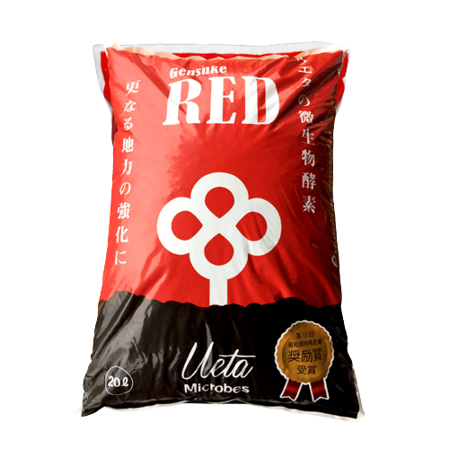

GS菌群と酵素の力で
元気な土と作物を育む
げんすけレッドは、微生物（GS菌群）と各種酵素の働きで、圃場環境を速やかに改善する土壌改良材です。ペレット状（粒）なので作業性もアップし、省労化を実現します。肥料や堆肥と合わせて使用することで、より効果的に働き、通常よりも少ない元肥で活力ある作物を育成します。
こんな方におすすめです！
- 定植時の活着を良くしたい
- 過剰な土壌成分を少しでも少なくしたい
- リン酸・カリ(P・K)をもっと効率よく吸収させたい
- 土が硬い
GS菌とは当社が独自で開発した有用微生物菌群（※）です。
（※）硝化細菌（亜硫酸菌・硝酸菌）、光合成細菌、繊維分解菌、放線菌、各種消化酵素（タンパク質分解酵素、脂肪分解酵素、炭水化物分解酵素、アルコール分解酵素）他
| 内容量 | 20リットル |
|---|---|
| 内容成分/th> | GS菌、天然ミネラル（微量要素）、アミノ酸、有機酸、ビタミンＢ１／Ｂ２、バーク堆肥、鶏糞、馬糞、フスマ、ヌカ （アタックより穏やかに効き始めます） |
| 取扱い | ポリ袋が破けるのでやさしく取り扱うこと。 冷暗所で保管。 雨や水にあてないようにしてください。 |
特徴＆効果
少ない堆肥で水はけの良いふかふかな土に
- 肥効を高める
- リン酸の分解吸収
- 団粒構造の生成
- 炭酸ガスの生成
- EC・PH調整
- 病原菌に強くなる
- （根を保護するエンドファイトの働き
- 有機肥料・堆肥から発生する臭気・ガス・害虫の発生を抑える
使用例
★ マルチ前の畝上 表層散布も可能！
 キュウリ：１反あたり 10〜20袋
キュウリ：１反あたり 10〜20袋
 トウモロコシ：１反あたり ５袋
トウモロコシ：１反あたり ５袋
 ネギ：１反あたり 3〜5袋
ネギ：１反あたり 3〜5袋
使い方
土作り、元肥時、追肥時にお使いください。
水分を与えることでGS菌群は動き始めます。
| 使用量の 目安 10Rあたり |
|
| 効果的な 使用法方 |
|

げんすけレッド
¥3,960(税込)

げんすけグリーン
¥2,200(税込)